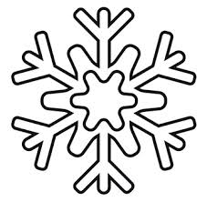

La Navidad es una festividad cristiana en la que se conmemora el nacimiento de Jesucristo. Se celebra el 25 de diciembre, excepto en la Iglesia ortodoxa rusa y otras iglesias orientales que se rigen por el calendario juliano, en las que se festeja el 7 de enero (correspondiente al 25 de diciembre en el calendario gregoriano).La palabra Navidad proviene del latín nativitas, ‘nacimiento”. El mismo origen tienen el francés Nöel, el italiano Natale y el portugués Natal. En inglés, la festividad recibe el nombre de Christmas (Mass of Christ ’s day, ‘día de la misa de Cristo’). En alemán se denomina Weihnachten, ‘noche sagrada’.A pesar de ser una fiesta cristiana, la Navidad es celebrada actualmente en gran parte del mundo también por no cristianos, desprovista de su contenido religioso, como una ocasión de reencuentro y reconciliación entre familiares y amigos cercanos.
Origen de la Navidad
Según los Evangelios de Mateo y Lucas, Jesús, considerado el Mesías anunciado por los profetas en el Antiguo Testamento, nació en la aldea de Belén, durante el reinado de Herodes el Grande, rey vasallo de Roma (Mt 2,1; Lc 1, 5 y 2, 6-7).Lucas señala que los padres de Jesús, María y José, se trasladaron a Belén desde Nazaret para empadronarse, en cumplimiento de un decreto del emperador Augusto (Lc 2, 1-6). Este evangelista también menciona que Jesús nació en un pesebre “porque no había sitio en la posada” (Lc 2, 7) y que un ángel anunció su nacimiento a unos pastores, quienes fueron los primeros en ir hasta el pesebre a adorarlo (Lc 2, 8-20).Los Evangelios no precisan la fecha en la que nació Jesús ni dan indicios al respecto. La primera mención del 25 de diciembre como día del nacimiento de Jesús se encuentra en un texto del helenista y apologista Sexto Julio Africano, del año 221.Entre los motivos por los que se pudo haber establecido esa fecha, se suele invocar la necesidad de la Iglesia de reemplazar la fiesta pagana del dies solis invicti nati (‘día del nacimiento del dios invicto’), en la que se celebraba el solsticio de invierno como día del nacimiento del Sol, con el fin de facilitar la aceptación del cristianismo.
El árbol de Navidad
Los orígenes del árbol de Navidad se remontan a los antiguos pueblos escandinavos y germanos. Estos, como parte de la celebración del nacimiento del dios Frey, adornaban un árbol de hoja perenne. Se atribuye a San Bonifacio (672-754) evangelizador de Alemania, haber adaptado esta costumbre al cristianismo. El árbol, un pino o abeto, se convirtió así en un símbolo del nacimiento de Jesús. Desde el norte de Europa, esta tradición se difundió al resto del mundo. En los hogares católicos, el árbol se prepara el 8 de diciembre, día en que se celebra la fiesta de la Inmaculada Concepción de la Virgen.
El pesebre. Los pesebres, también llamados belenes o nacimientos, fueron popularizados por San Francisco de Asís. En la víspera de la Navidad de 1223, este santo montó un pesebre con personas y animales reales en una cueva en las afueras de la aldea de Greccio, en Italia. En los hogares católicos, el pesebre se arma el 8 de diciembre, junto con el árbol de Navidad.
Papá Noel
La figura de este personaje, también conocido como Santa Claus, San Nicolás y, en Chile, como Viejito Pascuero, proviene de la leyenda en torno a San Nicolás de Bari, un obispo del siglo IV que vivió en Turquía y de quien se cuenta que arrojó por una chimenea dinero a un padre que no podía casar a sus tres hijas solteras, por carecer de dote. Se atribuye a los holandeses, quienes fundaron Nueva Ámsterdam (la actual Nueva York), haber llevado la figura de Santa Claus a América, junto con la costumbre de entregar regalos.
Corona de Adviento. La corona de Adviento, formada por un corona de ramas de pino o abeto y cuatro velas, representa la espera y la preparación de la Navidad, durante las cuatro semanas que le preceden. Cada vela simboliza un domingo de Adviento. Como otras tradiciones cristianas, esta tiene su origen en tradiciones paganas; en este caso, de los pueblos germanos, que confeccionaban coronas de ramas verdes y prendían velas para representar el fuego del dios Sol y la esperanza de la venida de la primavera.
Los villancicos
Estas canciones populares navideñas fueron en sus inicios, en el siglo XIII, composiciones de temas profanos. A partir del siglo XVI, la Iglesia empezó a promover los villancicos de temática religiosa, para que fueran cantados durante las procesiones y otras celebraciones religiosas. De entre estas festividades, la Navidad, por la alegría a la que está asociada, fue en la que tuvo mayor difusión. El equivalente del villancico en Inglaterra es el carol.
La cena de Nochebuena. Durante la víspera de Navidad es habitual en muchos sitios que las familias se reúnan para compartir una cena abundante. Los platos varían de un país a otro, de acuerdo con la gastronomía propia de cada lugar. Al llegar las doce de la noche, se realiza un brindis. En muchos países, se hace el intercambio los regalos, colocados junto al árbol. En otros países, los regalos se abren el día 25 por la mañana.
actividades de navidad
Hacer copos de nieve de papel

Cocinar una hornada de galletas
Ver la iluminación de la ciudad
Ir en busca de la nieve
Navidad en la Biblia
La información sobre el nacimiento de Jesús se encuentra en los evangelios de Lucas y Mateo. Uno de los textos más distinguido sobre la Navidad se encuentra en el libro Lucas:Y aconteció en aquellos días que salió un edicto de César Augusto, para que se hiciera un censo de todo el mundo habitado. Este fue el primer censo que se levantó, cuando Cirenio era gobernador de Siria. Y todos se dirigían a inscribirse en el censo, cada uno a su ciudad.Y también José subió de Galilea, de la ciudad de Nazaret, a Judea, a la ciudad de David, que se llama Belén, por ser él de la casa y de la familia de David, para inscribirse junto con María, desposada con él, la cual estaba encinta. Y sucedió que mientras estaban ellos allí, se cumplieron los días de su alumbramiento. Y dio a luz a su hijo primogénito; le envolvió en pañales y le acostó en un pesebre, porque no había lugar para ellos en el mesón.En la misma región había pastores que estaban en el campo, cuidando sus rebaños durante las vigilias de la noche. Y un ángel del Señor se les presentó, y la gloria del Señor los rodeó de resplandor, y tuvieron gran temor.Mas el ángel les dijo: "no temáis, porque he aquí, os traigo buenas nuevas de gran gozo que serán para todo el pueblo; porque os ha nacido hoy, en la ciudad de David, un Salvador, que es Cristo, el Señor. Y esto os servirá de señal: hallaréis a un niño envuelto en pañales y acostado en un pesebre".De repente, apareció con el ángel una multitud de los ejércitos celestiales, alabando a Dios y diciendo:"Gloria a Dios en las alturas, y en la tierra paz entre los hombres en quienes Él se complace."
(Lucas, 2: 1-14).